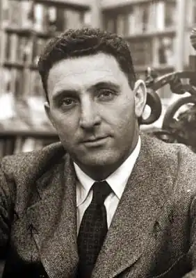
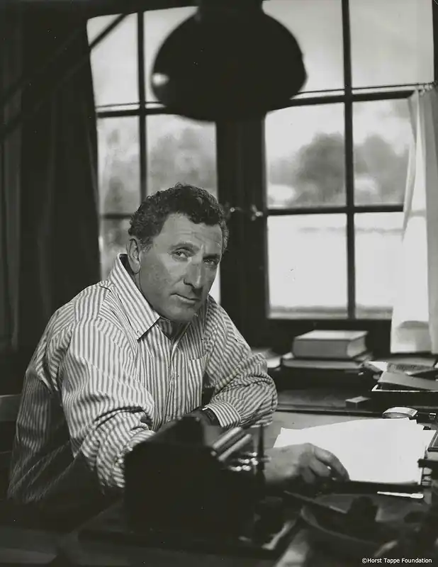
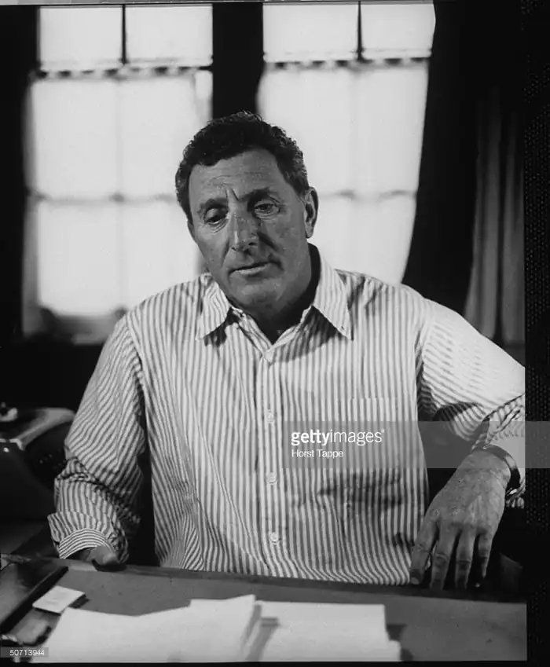

ШОУ, Ірвін (Shaw, Irwin — 27.02.1913, Нью-Йорк — 17.05.1984, Давосплац, Швейцарія) — американський письменник.Народився у єврейській сім'ї дрібного комерсанта. Рано розпочав трудову діяльність, змінив чимало професій: працював на фабриці парфумів, в універсальному магазині, шкільній бібліотеці, вчителював, був водієм вантажівки і навіть гравцем професійної футбольної команди. Ці "університети" надали Шоу неоціненний запас життєвих спостережень. Закінчивши у 1934 р. Бруклінський коледж зі званням бакалавра мистецтв, Шоу влаштувався радіожурналістом. Як письменник радикальних переконань, він формувався в атмосфері "червоних тридцятих" — десятиліття, позначеного "злівішанням" поглядів багатьох майстрів культури, що й визначило соціально-критичний пафос його найкращих творів.
Ім'я письменника набуло широкого розголосу, після того як Шоу створив антивоєнну п'єсу "Поховайте мертвих" ("Bury the Dead", 1936), яка успішно йшла на сцені радикального театрального об'єднання "Груп тіетр". В одному з перших маніфестів цього об'єднання (серед його керівників були відомі режисери Г. Клермен і Лі Страсберґ), зокрема, наголошувалося: "Хорошою слід уважати ту п'єсу, у якій є образ або символ актуальних проблем нашого часу". П'єса Шоу, близька за стилістикою до експресіонізму, змальовувала оригінальну ситуацію. Шестеро солдатів, які загинули в бою, відмовляються від поховання, не бажають лягти в могилу. Натомість начальство вимагає поховати загиблих за всіма правилами військового статуту, оскільки без цього, мовляв, не можна "воювати до переможного кінця". Однак ані накази командира похоронної команди, ані умовляння священиків, ані вимоги генералів не діють. Нарешті, генерали приводять до місця поховання матерів, дружин, коханих убитих солдатів, аби з їхньою допомогою вплинути на "бунтівників", проте й це не допомагає. У фіналі один із генералів наказує розстріляти непокірних небіжчиків з кулемета, щоб убити їх удруге.
Перу Шоу належить ще кілька десятків п'єс, одна з яких — "Облога" ("Siege", 1937) — була відгуком на події громадянської війни в Іспанії. У роки Другої світової війни Шоу добровольцем пішов в армію, потім працював військовим кореспондентом. Враження письменника, переконаного антифашиста, набули втілення у відомому, перекладеному багатьма мовами романі "Молоді леви" ("The Young Lions", 1948). Поряд із романами Н. Мейлера ("Нагі та мертві"), Дж. Джонса ("Звідси і навіки", "Лише поклич"), К. Воннегута ("Різниця номер п'ять, або Хрестовий похід дітей") книга Ш. належить до найпомітніших творів американської літератури про Другу світову війну. Дія у романі охоплює період з 1938 до 1945 p., події відбуваються у Німеччині та США, значна увага приділяється бойовим діям у Франції, Північній Африці, Італії, десантові союзників у Нормандії. Серед численних образів роману вирізняються три головні постаті: американці Майкл Вайтекер і Ной Аккерман та німець Христіан Дістль. їхні сюжетні лінії розвиваються паралельно в часі, а долі сповнені глибокого символічного значення. У романі Шоу викриває фашизм, його людиноненависницьку теорію та практику. Христіан Дістль — переконаний нацист (хоча замолоду він деякий час був комуністом, це відомо гестапо і заважає його військовій кар'єрі). Він воює у лавах вермахту, бере участь у французькій кампанії 1940 p., потрапляє у Північну Африку, де отримує поранення, потім опиняється в Італії. Дістль значною мірою нагадує свого командира Гарденбурґа, котрий уособлює нацистське варварство. "Ми зможемо процвітати тільки тоді, коли вся Європа буде жебрати", — один з його постулатів. Шоу простежує, як насильство, грабунки, жорстокість зсередини розкладають вермахт. Шоу критично ставиться і до американської армії, показуючи некомпетентність деяких офіцерів, їхню зараженість гендлярським духом, нерозуміння ними характеру та смислу антифашистської боротьби. Майкл Вайтекер — театральний режисер, який бачить фальш існування багатьох людей свого кола. Внутрішнє сум'яття не полишає його і після мобілізації до війська. Спочатку він намагається, скориставшись знайомствами, отримати тепленьке місце. Але поступово у його світовідчутті відбуваються переміни. На фронті він стає переконаним антифашистом. Драматична доля третього героя роману — Ноя Аккермана. Інтелігент, єврей, він зустрічається в армії з антисемітизмом деяких офіцерів та солдатів-південців. Але спроби налагодити стосунки з товаришами по службі не дають результатів. Коли у нього крадуть із сумки десять доларів, які він мав намір надіслати дружині, Ной вирішує покласти край образам і знущанням. Він почергово викликає десятьох своїх кривдників битися навкулачки. Після кожної бійки Ной із синцями і травмами вирушає до шпиталю, щоб, одужавши, вступити в черговий двобій. Він захищає свою людську гідність, бажаючи, щоби "з кожним євреєм обходилися так, наче він важить двісті фунтів". Саме з образом Ноя Аккермана пов'язаний глибинний гуманістичний пафос роману. У фіналі "Молодих левів", де йдеться про події весни 1945 p., останні дні "третього рейху", перехрещуються лінії трьох героїв. Американці вступають на територію концтабору, у якому в'язні здобули свободу, знищивши охорону. Христіан Дістль ховається від розплати у лісових хащах. Там він зустрічає двох друзів, Вайтекера і Аккермана, і вбиває останнього. Переслідуючи Дістля, Вайтекер мстить за смерть друга. У романі, насиченому багатьма драматичними перипетіями, порушуються важливі етичні проблеми становлення особистості, змальовано крах ліберальних ілюзій, аморальність фанатизму і масового психозу. У важкий для Америки час "холодної війни" Шоу залишився відданим прогресивним ідеалам. У романі "Збаламучене повітря" (1951), розповідаючи про працівників радіо, несправедливо звинувачених у прокомуністичних симпатіях, Шоу змальовує Америку в умовах маккартистського "полювання на відьом". Утім, слід також зауважити, що творчість Шоу була вельми нерівною: вдалі твори чергувалися з явно пересічними. Прагнучи здобути успіх у читачів, він віддавав належне штампам комерційної літератури, покладаючись на сюжетну захопливість і мелодраматизм. Серед його вдалих творів вирізняється роман "Вечір у Візантії" ("Evening in Byzanthium", 1973), дія якого відбувається під час Канського кінофестивалю. У центрі розповіді — голівудський кінорежисер Джесс Крейґ, який перебуває в стані гострої творчої кризи. Передаючи атмосферу фешенебельного курорту, веселощів та розкоші, нігілістичної вседозволеності у гонитві за насолодою, Шоу створює настрій "занепаду", внутрішньої порожнечі, що уразили культуру Заходу. Здобула визнання і дилогія Шоу "Багач, бідняк" ("Rich Man, Poor Man", 1970) та "Жебрак, злодій" ("Beggarman, Thief, 1977), у якій автор створив широку панораму життя американського суспільства приблизно за три з лишком десятиліття, починаючи з кінця Другої світової війни і до 70-х pp. Шоу стежить за долею двох поколінь родини Джордахів, показує величезну владу грошей, яка значною мірою визначає стосунки між людьми. Письменника непокоїть загроза деградації особистості, що переймається лише гонитвою за матеріальним успіхом. Відтак Шоу розкриває дві життєві позиції, дві філософії. Конформістська пов'язана з образом Рудольфа, який стає багатим; натомість бунтарство, незгоду з загальноприйнятими нормами уособлює Томас, якому судилися нестатки. Шоу плідно працював і в царині новелістики, у 1979 р. він видав збірку "П'ять десятиліть", до якої увійшли його найкращі оповідання. У новелах Шоу, у його прагненні до лаконізму, підтексту помітний вплив Е. Хемінґвея, який був одним із його кумирів, особливо замолоду. Твори Шоу українською мовою перекладали О. Логвиненко та В. Мусієнко. Б. Пленсон